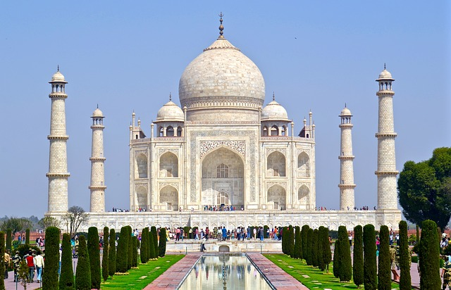

Gandhi led India to independence and inspired movements for civil rights and freedom across the world.
Born and raised in a Hindu merchant caste family in coastal Gujarat, India, and trained in law at the Inner Temple, London,
Gandhi first employed nonviolent civil disobedience as an expatriate lawyer in South Africa,
in the resident Indian community's struggle for civil rights.
After his return to India in 1915, he set about organising peasants, farmers, and urban labourers
to protest against excessive land-tax and discrimination.
 Taj Mahal, meaning "Crown of the Palaces" is an ivory-white marble mausoleum on the south bank of the Yamuna river in the Indian city of Agra. It was commissioned in 1632 by the Mughal emperor, Shah Jahan (reigned from 1628 to 1658), to house the tomb of his favourite wife, Mumtaz Mahal. It also houses the tomb of Shah Jahan, the builder. The tomb is the centerpiece of a 17-hectare (42-acre) complex, which includes a mosque and a guest house, and is set in formal gardens bounded on three sides by a crenellated wall.